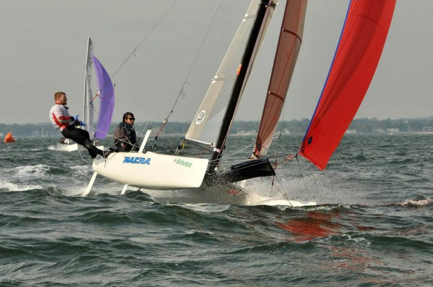
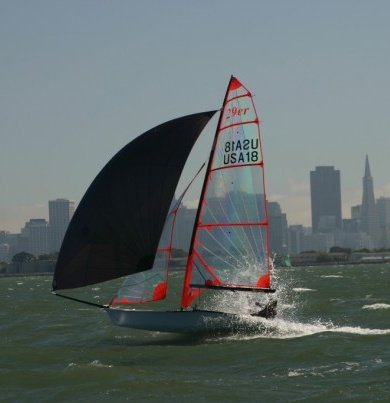
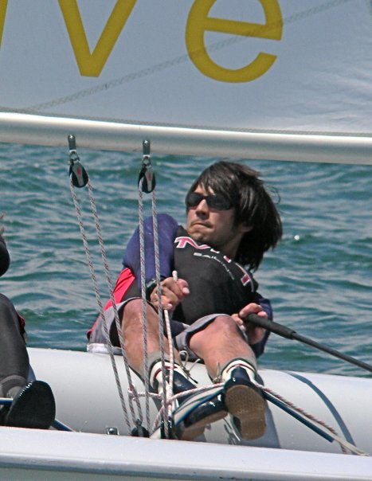
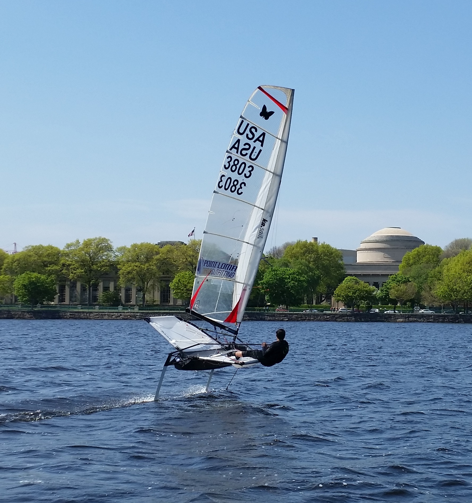
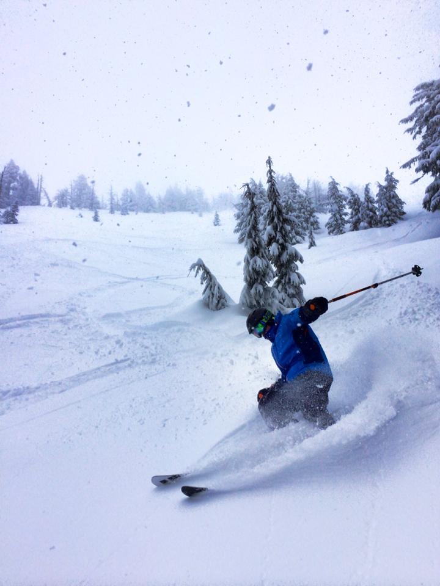
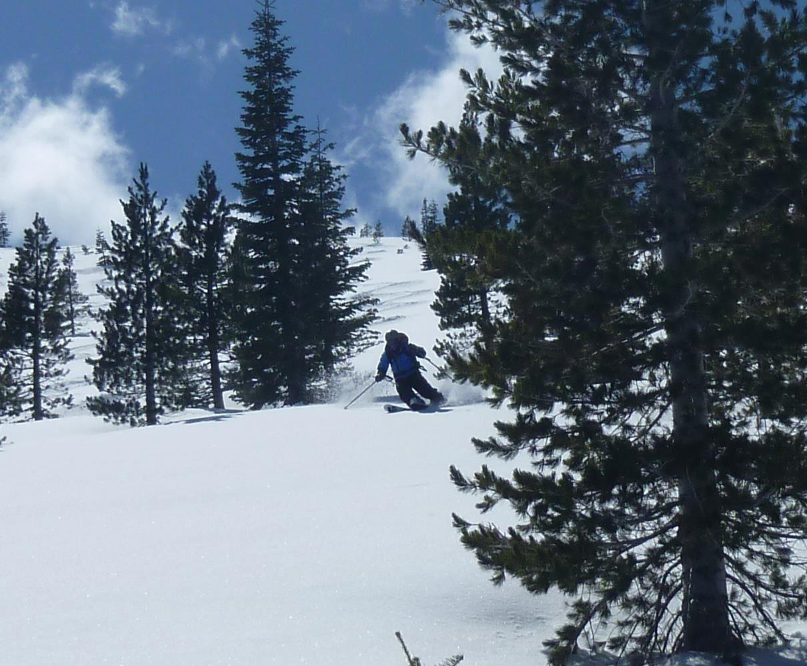

I learned to sail when I was 8 and have been racing small boats ever since (brief resume). Sailing requires a great blend of mental and athletic skill, and a good understanding of physics and weather. In a broad sense, sailing is a big motivator of my interest in ocean science as well as dynamic control systems. I particularly like the technical aspects of high performance sailing, and follow developments at the top end of the sport closely (see one of my favorite sailing blogs here). Sailing has also brought me to many interesting places around the world.
Since 2011 I have been racing F18 catamarans with fellow MIT ocean engineering graduate student Jeff Dusek. A (slightly outdated) page detailing our campaign is here: USA753 racing.

In the past, I have competed at the international level in the 29er class, and was a member of the MIT Varsity Sailing Team. I can often be found at the MIT Sailing Pavilion running experiments, sailing in pickup team racing, or (attempting) to sail the foiling moth. Thanks to Oceans at MIT for writing a story about sailing the Moth.



I enjoy a good powder day inbounds or in the backcountry.
 
Other interests: music, mountain biking, ice hockey